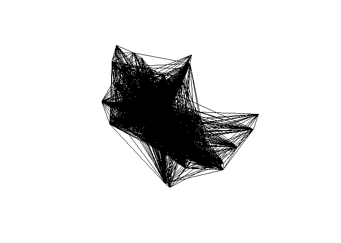
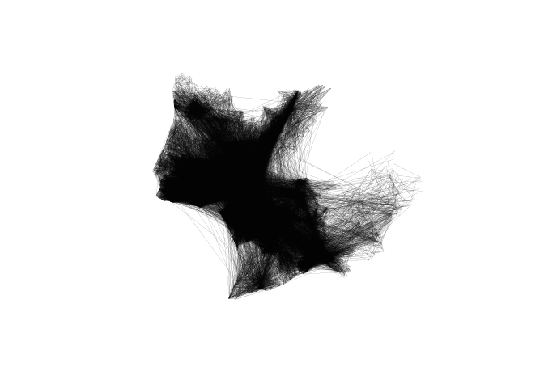

The goal of biclar is to store code and (in the releases) data for estimating cycling potential and influencing policy.
biclar is a tool for the design and assessment of different scenarios of the cycling network models in the Lisbon metropolitan area (LMA).
Input data
The key datasets are as follows:
- Trips dataset with Origin and Destination, at Freguesia level, disaggregated by transport mode, from Instituto National de Estatística (2018)
- CAOP 2020 - Official limits of Portuguese areas.
- Road network from OpenStreetMap
- Main public transport interfaces at Lisbon Metro Region, provided by Transportes Metropolitanos de Lisboa
Cenarios for cycling uptake
Baseline
The baseline scenario makes use of the 2018 mobility survey data in LMA.
We considered all trips between Freguesias.
See vignette baseline scenario to see how this was modeled.
ENMAC targets
The National targets for cycling uptake were set to:
- 4% of all trips should be made by bicycle by 2025
- 10% of all trips should be made by bicycle by 2030
Cycling trips should replace car trips directly.
See vignette ENMAC scenario to see how this was modeled.
Intermodal trips
See vignette Intermodal scenario to see how this was modeled.
E-bikes investment policy
See vignette E-bike scenario to see how this was modeled.
Methods
PCT - Propensity to Cycle Tool
biclar uses the methods developed in PCT.bike (Lovelace et al. 2017) for cycling uptake estimation and data visualization.
Jittering
For the disagregation of OD pairs at Freguesias level, we use OD Jittering (Lovelace, Félix, and Carlino 2022) method, which better suits walking and cycling trips modelling (shorter distances), instead of relying on centroids that concentrate all the trips between areas.
The OD datasets, before and after jittering, are shown below.

Cycling routes
Use of CyclingStreets.net (R package) for fast and quiet bike routes for baseline scenario.
For e-bike scenario, we developed a proper algorithm, considering the topography (and slopes package).
Intermodal trips
We made use and developed a methodology that considers replacing long trips by bike + train or ferry trips.
Estimation of socioeconomic benefits
Health Economic Assessment Tool (HEAT v5.0) for walking and cycling by WHO.
References
Instituto National de Estatística. 2018. “Mobilidade e Funcionalidade Do Território Nas áreas Metropolitanas Do Porto e de Lisboa: 2017.” Lisboa. https://www.ine.pt/xportal/xmain?xpid=INE&xpgid=ine_publicacoes&PUBLICACOESpub_boui=349495406&PUBLICACOESmodo=2&xlang=pt.
Lovelace, Robin, Rosa Félix, and Dustin Carlino. 2022. “Jittering: A Computationally Efficient Method for Generating Realistic Route Networks from Origin-Destination Data.” Findings. https://doi.org/10.32866/001c.33873.
Lovelace, Robin, Anna Goodman, Rachel Aldred, Nikolai Berkoff, Ali Abbas, and James Woodcock. 2017. “The Propensity to Cycle Tool: An Open Source Online System for Sustainable Transport Planning.” Journal of Transport and Land Use 10 (1). https://doi.org/gfgzf7.